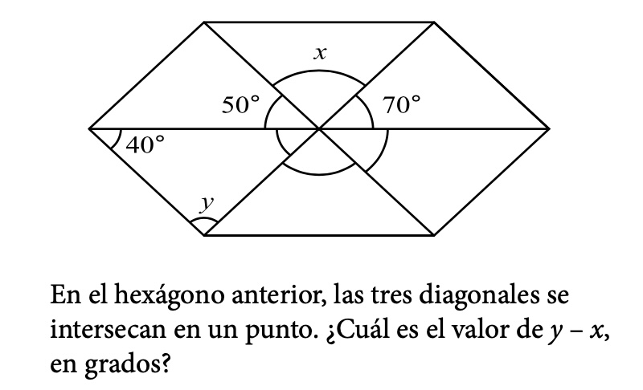

CEVV
Centro Educativo Valles Virtual
Para esta última parte trabajaremos una situación didáctica, daremos un ejemplo y la actividad será, que tú diseñes tu propia situación didáctica para que la puedas aplicar con tus alumnos en clase.
Parte 1
Propongamos el siguiente problema: Imaginemos que los podemos llevar con recortes al aula.
Parte 2
Lo primero que haremos será generar una actividad en geogebra para dar a los alumnos la idea de los ángulos suplementarios.
Observa el siguiente tutorial. Que te podrá servir de ejemplo para que generes el propio.
Parte 3
Ahora vincularemos lo que trabajo en la actividad de Geogebra para lograr que los alumnos comprendan el teorema de los ángulos opuestos.
Observa el siguiente tutorial. En el que trabaja un poco de algebra y se hace una demostración sencilla.
Parte 4
Por último descarga el libro y da lectura para que genéres tu proyecto para entregar.Re cuerda que el documento entregable se trara de que logres generar una situación didáctica en el cuál el alumno desarrolle sus competencias y debes apoyarte de los recursos tecnológicos en este caso Geogebra, el proyecto será pensado para tus alumnos.
Para subir el proyecto final, hacer click abajo...
Subir Proyecto